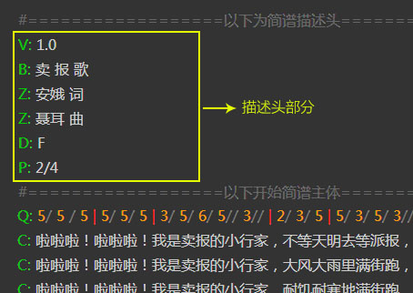

描述头图例

以上脚本中，以“#”开头的行是注释行，仅方便阅读，无实质作用。
描述头说明
描述头是由许多行组成，一般写在脚本顶部。每行标记一项简谱或脚本的基本信息，如：标题、副标题、作者、调式等。每一项信息使用“大写字母”作为标识，每个大写字母的意义如下：
| 字母 | 说明 | 示例 | 必须 |
|---|---|---|---|
| V | 版本号 | V: 1.0 | 是 |
| B | 标题 | B: 排排坐 | 是 |
| Z | 作者 | Z: 佚名 词曲 | - |
| D | 调式 | D: E | 是 |
| P | 拍号 | P: 4/4 | 是 |
| J | 节拍 | J: 6 或 J: 欢快的 | - |
V 脚本版本号
用来指定当前谱脚本是使用哪个版本的脚本规范，主要是因为后期可能会对脚本规范进行调整，衍生出不同的版本规范。
B 曲谱标题
由于一些曲谱有主标题还有附标题，所以B字段可以多次出现。第一次出现将被认为是主标题，第2词以后出现的被认为是附标题。
在番茄简谱软件中，曲谱标题是居中显示的，也可以用来写居中显示的其他文字。
Z 作者
由于一般情况下曲谱作者可能有多个，所以Z字段可以出现多次。
在番茄简谱软件中，作者分别由上到下地居右显示，也可以用来显示列在乐谱右上边的其他文字。
D 调式标志
调式必须是一个大写的字母，在字母后面可以加”＃”或“$”表示升降调。
P 拍号
使用“/”作为分号线，写法如：P:6/8 或 P:4/4，同时可以指定多个拍号，例：p:4/4 2/4；辅助拍号也可以加上括弧，例如：P:4/4 ( 2/4 1/4 )
J 节拍
节拍可以使用数字或文字表示，当使用数字时，软件将识别为每分钟的拍子数。如果使用文字描述，则直接将文字显示在拍号下方位置。可以两者并存。